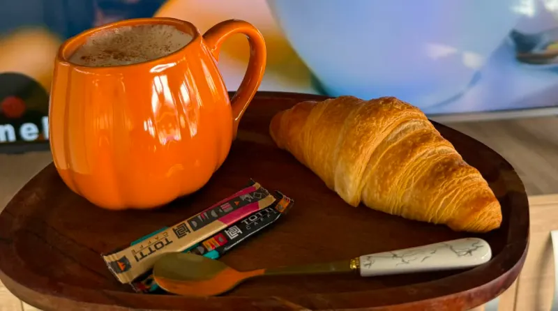

Főoldal / Étlap
ÉtlapHázias ízek, bőséges adagok.
Székely, magyar és román klasszikusok, sültek fatálon, halak, pizza és tészta — a délutáni kávéhoz pedig túrófánk vagy madártej.
Látványterv: a tételek a Vándor korábbi étlapjáról és napi menüiből valók. Az árakat és az aktuális kínálatot az étteremmel egyeztetjük.
Levesek
Csorbák és levesek, ahogy itthon főzik.
Fotó: a napi levesekrőlide a Vándor saját fotója kerül
- Parasztcsorbasavanykás, zöldséges csorba
- Babgulyáslaktató, paprikás babgulyás
- Lucskos káposztaa hideg napok levese
- Zöldségleveskönnyű, tiszta leves
Húsok & sültek
Rántott, sült, töltött — és a nagy tál, ha többen jönnek.
Fotó: egy tál ételrőlide a Vándor saját fotója kerül
- Éhes Vándor Tála ház tála185 lejrántott hús, grillkolbász, sült oldalas, hasábburgonya, steakburgonya, zöldséges rizs, csemegekukorica-mix — fatálon, házhoz is
- Fatányérosvegyes sültek fatányéron
- Csülöka régi étlapról
- Csirkemell nyolcféleképpenrántva, sütve, töltve — a pontos választékot az étterem adja meg
- Baconnel és sajttal töltött karajnapi menüben
- Magyaros szeletnapi menüben
- Sült csirkeszárnynapi menüben
- Fasírtnapi menüben
Köretek
Bármelyik főételhez, szabadon.
- Hasábburgonya
- Steakburgonya
- Krumplipüré
- Vajas tarhonya
- Édesburgonya
- Zöldséges rizs
Halak
Édesvízi és tengeri hal.
- Pisztráng
- Ponty
- Tőkehal
Pizza & tészta
Helyben, elvitelre vagy házhoz.
- Pizzáka választékot az étterem adja meg
- Tésztáka választékot az étterem adja meg
Desszertek
A kávé mellé, vagy a vacsora végére.
- Túrófánk
- Madártej
- Csokisoufflé
- Palacsinta
Italok
Reggel kávé, este koktél.

- Kávékreggel héttől
- Koktélokesténként a bárban és a teraszon
- Boroktemesrékasi borok
- Pálinka